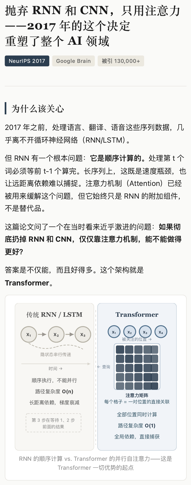
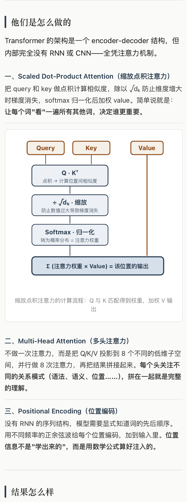
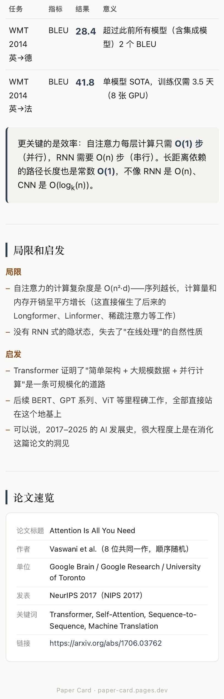

Paper Card
Paper Card
A case study on how agent collaboration can turn a paper into structured, shareable visual content.
一个关于 agent 协作流程的案例页：从论文输入开始，经过提炼、结构化与图形化，最终形成可传播的视觉内容。
Work with AI / AIUX Case Study
Case.1_ 从论文到视觉内容的 Agent 协作流程设计
用一个论文长图案例，展示 agent 如何参与写作流程：先明确输入，再组织信息，随后做图形化转译，最后形成可传播的视觉输出。
流程先行
信息准确
表达简洁
输出可见
01 / 写作流程
先展示流程，再按流程展示内容。
这页 case 的讲法不是堆结果，而是让听众先理解 agent 的协作路径。
Step 01
输入
论文题目、链接、目标受众和输出形式。
Step 02
提炼
把论文变成可审阅的重点和初稿。
Step 03
结构化
按讲解顺序组织成模块。
Step 04
图形化
选择对比图、流程图、结果卡和取舍图。
Step 05
输出
生成手机长图和可交互界面。
02 / Agent Backstage
Agent 内部流程：把模糊输入变成可交付内容。
这张图展示协作后台：agent 负责组织材料、调用能力和生成草案；人保留关键判断，决定准确性、取舍和传播目标。
TRIGGER / 输入触发
论文 + 目标
材料、受众、输出形式先被定义。
AGENT WORKSPACE / 协作中枢
理解材料，组织结构，生成草案
上下文记忆
阅读提取
结构规划
图形化转译
DECISION / 判断点
是否讲清楚？
检查准确性、简洁度和可传播性。
可输出：长图 / 可交互界面
需反馈：改标题 / 删内容 / 调顺序
HUMAN REVIEW / 人工反馈
人的判断回流到下一轮生成
修改不是补丁，而是下一轮 agent 工作的约束。
输入被定义
先固定论文、受众和输出形式，避免 agent 在模糊目标里发散。
判断被显性化
准确性、简洁度、可传播性成为流程里的检查点。
反馈能回流
人的修改不是补丁，而是下一轮生成的约束。
04 / Step 02-03 提炼与结构化
写作不是压缩全文，而是建立讲解顺序。
为什么该关心
先解释问题背景：为什么 RNN 的顺序计算会限制效率和远距离依赖。
他们怎么做
再解释方法：注意力机制如何替代传统序列结构。
结果与启发
最后收束：结果、局限、启发和论文基本信息。
05 / Step 04 图形化转译
图形化不是装饰，而是降低理解成本。
有差异，画对比图
RNN 顺序等待 vs. Transformer 并行关注。
有步骤，画流程图
Q/K/V 如何变成注意力输出。
有数字，画结果卡
让结论先被看见，再读解释。
有利弊，画取舍图
依赖路径更短，但长序列成本更高。
06 / Step 05 输出
最终输出要能直接作为分享素材使用。
下面是整理好的三张图片输出。桌面端完整展示，手机端横向滑动查看。

输出 01 / 问题与对比
建立问题背景，并用对比图说明核心变化。

输出 02 / 方法机制
把抽象机制转成更容易讲解的视觉结构。

输出 03 / 结果与速览
用结果、局限和论文信息完成收束。
07 / 分享课结论
这个 case 讲的是 agent 协作，而不是 AI 一键生成。
准确、简洁、高效的 AIUX 案例，需要展示输入、流程、判断和输出之间的关系。
流程可见
先让听众知道 agent 怎么工作，再展示具体内容。
判断保留给人
人决定深度、取舍、语气和传播目标。
输出成为证据
最终图片不是装饰，而是流程有效性的证明。